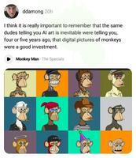
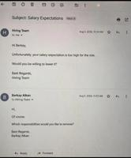

An anonymous reader quotes a report from Gizmodo: Dr. Dre, the pioneering rapper and seven-time Grammy-winning producer behind hit songs like Tupac's "California Love" and Eminem's "The Real Slim Shady," is very much pro using artificial intelligence tools to make music. In an interview with the New York Times, Dr. Dre and Interscope Records co-founder Jimmy Iovine spoke about artificial intelligence's recent foray into music production, with the producer characterizing those who oppose AI song generation tools as "afraid of learning new things." "I don't see it as a threat. I think the only people that see it as a threat are the people who have trouble creating," Dr. Dre said. "I had a discussion with a few people a few days ago. They were against AI, and I'm like, 'OK, you sound like the person that would have been against the drum machine when it came out.' Or synthesizers, right?"
[...] Iovine, the music executive and Dr. Dre's partner in Beats by Dre, for his part, says he doesn't "see the downside at all." "There will be some crappy music. There's crappy music now," Iovine told the NYT. "In the studio, when gifted people have AI, they're going to make better records." Dr. Dre said he uses AI in producing "as a tool to see what it would do with what I just did." The award-winning producer also said he is definitely not alone among his peers in his stance on AI either: many producers use AI but fear to admit it. Iovine calls them "closet AI producers," and says Timbaland, the four-time Grammy-winning singer-producer behind a long list of hits like "Promiscuous" with Nelly Furtado, is also one.
Read more of this story at Slashdot.
3,346 backers pledged $1,198,844 on Kickstarter to build the (modular) handheld Linux computer, the Mecha Comet. It's slightly bigger and heavier than your smartphone, with a 4-inch AMOLED display and loaded up with things like microphones, speakers, a SIM tray, two USB ports and a mini HDMI port. There's three separate kill switches for wifi, microphone and camera — plus a "boot mode" switch for the SD card, and even three pins for instant access to its debug console.
It's now expected to ship in October or November (and is still available for preorder).
Snap-in extensions include a keyboard (with programmable colors for its backlit keys), a gamepad, and a special IO Breakout that exposes the 40 pogo pins for modules, sensors, and MCUs. They're all open hardware, and founder Shoaib Merchant says "I'm looking forward to more community designs over the upcoming months." He shows the screen in action in a video on Kickstarter, demonstrating native apps like Music, Notes, Settings, and Files — as well as a Terminal app running on its color screen.
A Linux correspondent at How-To Geek notes its ships "with a custom, hardware-optimized Linux distro out of the box," so "it's like having a dedicated Linux terminal in your pocket." And they argue the new device
"could be the future of Linux smartphones."
I should also mention that you don't necessarily have to use the battery; it can power on over USB PD without one. Overall, you're getting the same I/O you'd expect from a computer in a smartphone-like form factor, complete with modular input devices — and it's running Linux under the hood. For me, that's the most innovative gadget I've seen in the Linux hardware space in a long time...
It's powerful enough to run most Linux terminal apps, which opens up a lot of possibilities. You're also getting an NPU built right into the SoC, which opens up the possibility for on-device AI workflows — something not possible in budget smartphones. Now, I personally plan to use it for SSHing into my main computer and home lab and operating them remotely. That's also why I'll be putting the LTE modem in the M.2 slot rather than an SSD — mobile data means I can reach my machines even when there's no Wi-Fi around.
I also showed it to my partner, and she sees this as the ideal minimalist phone for digital detoxing. There's a built-in media player, a basic notes app, and you can even run Spotify from the terminal if you want.
Read more of this story at Slashdot.
It's "radically different from other quantum computers" reports Phys.org. The Helios system uses trapped ions — charged atoms suspended in free space using electromagnetic fields.
But it operates with 98 qubits — making it the largest trapped-ion quantum computer built so far.
Quantinuum, the company behind the device, is based in Cambridge, U.K., and Broomfield, Colorado. It demonstrated earlier machines operating on 32 qubits in 2023 and 56 qubits in 2025...
It relies on two major advances — one in hardware and one in software. First, the four-way X junction lets the system handle several tasks at once rather than one at a time, which is much faster. That was impossible in earlier QCCD [quantum charge-coupled device] machines, which could only move data back and forth in a single line or loop. Second, judicious use of the freedom offered by the two dimensions of the X junction relies on new classical control software called Helios runtime, which plans the smartest, fastest route for moving and processing the data. Together, these represent a substantial advance in the engineering of quantum computers.
An important consequence is that Helios can perform computations that cannot be performed even on the largest supercomputers using known methods within reasonable amounts of time and power consumption. This demonstrates the ability of this device and its successors to surpass the computational prowess of classical computers — although their algorithms and hardware are rapidly advancing, too. Having said that, Helios' computations have just been random benchmark tests, so the practical importance of this leap forward is still limited. To perform quantum computations of practical importance in science and commerce, even the most optimistic estimates suggest that quantum computers must be enormously bigger and better — of the order of a million qubits.
Read more of this story at Slashdot.
A class action filed this week accused Amazon's Twitch gaming service of using video streams to fuel its AI products without licensing or obtaining permission, reports Engadget:
Earlier this month, Twitch Support posted on X that it added an option to opt out of "having your channel content used to train generative AI content models across Amazon." Shortly after, Twitch hosted an episode of its recurring Patch Notes stream where Mike Minton, the company's chief product officer, said "if it was opt-in, nobody would opt in," when asked by a viewer why the Twitch settings for AI training aren't opt-in but instead enabled by default, requiring users to opt out if they don't want to participate.
Now, the latest class action lawsuit claims that Twitch and Amazon committed a breach of contract when the companies decided to use its streamers as "free training stock for separate commercial AI products."
Read more of this story at Slashdot.
This week OpenAI launched a version of ChatGPT exclusively designed for teenagers between the ages of 13 and 17, reports CTV, "saying this version came with stronger protections around content related to mentions of suicide, self-harm and romantic or sexual chats."
[Tech analyst Carmi Levy says] "What it's doing is it's using cues, it's sort of watching how you're using the tool, and it's trying to guess your age." Levy said if ChatGPT thinks a person has lied about their age when they first signed up, it will automatically put them into the Teens mode for protection. "It includes those sort of two things: prevent you from having experiences that are age inappropriate, and also add features that are aligned with academics, so that makes it easier to study, makes it less likely for you to cheat on an assignment, provide resources that that that allow you to learn more effectively," he said.
Levy reminded users that this is still an application and a web service, which means it's constantly collecting personal information about the users' activities on the device and using the data to estimate their age... In the event a user is talking about self-harm, this new version will block the conversation and suggest additional help or call emergency or mental health services, Levy explained. It would do the same with violent content, eating disorders, engaging in dangerous activities, as well as explicit, sexual or graphic content. "It's using AI again to sort of parse out that conversation: 'are we headed in a in a significant direction? If so, throw up that guardrail, stop it from happening, redirect.'"
However, the tech analyst said a number of people who have attempted to bypass the guiderails for research have succeeded in doing so "with a little bit of prompting.... I wouldn't call it 100% safe. That's kind of the catch-22 of the entire AI industry." This will lead parents to think that their children are safer and reduce the oversight on their online activities, which Levy described as a "perverse impact" that is "problematic."
"Parents should not assume that OpenAI has their kids' best interests at heart. They should also not assume that these technologies are perfect. They will miss certain things, and they will also engage in what we call false positives," he said. "An adult who's legitimately is in the platform might be tagged as a child because the AI simply got it wrong."
OpenAI's blog post says the new mode was designed for "preserving the ability to learn, create, and explore."
But CNN notes the move "comes as OpenAI faces a string of lawsuits alleging that inappropriate conversations with ChatGPT contributed to the harm or deaths of young people."
[New tools] include nudges for teen users to take a break if they've been active for 90 minutes within a three-hour window. OpenAI is also adding options for teens or parents to set "Quiet Hours" when ChatGPT is unavailable or "Study Hours" where ChatGPT's study mode for learning will be on by default. The company also said it has improved protections to prevent ChatGPT from expressing personal feelings toward a user. And it's adding reminders that caution teens to think twice if they try to upload a private or sensitive image to the chatbot...
Nearly a third of American teens use AI chatbots daily, a Pew Research Center study published in December found. ChatGPT was by far the most popular AI chatbot in the survey, with more than half of those teens reporting having used it.
Engadget shared this observation from Josh Golin, the executive director of Fairplay, a non-profit advocating for policies to make the internet safer for children. "Most parents, overwhelmingly, do not avail themselves of [parental oversight] tools, in part because they are deliberately made hard to find and use." Golin's group wanted to see testing of the tools first to see whether they led to better outcomes for teenagers. "The way this was just announced feels more like a response aimed at public relations than actual deep thinking about what kind of support [teens] need."
And Mashable got a similar quote from Robbie Torney, head of AI/digital assessments for Common Sense Media's Youth AI Safety Institute. OpenAI's teen experience makes important safety commitments, but "What we really need now is evidence that they work, and we need this evidence, including our testing and the testing of others, before anyone, including parents, puts real trust in ChatGPT for Teens."
Importantly, Torney said parents shouldn't assume their child is using ChatGPT for Teens. While OpenAI uses age estimation to place users in the age-appropriate version of ChatGPT, it can still mistake a user as older. Parents can be sure their child is using the teen version by linking their ChatGPT account to their child's and implementing OpenAI's parental control features. If a teen has previously lied about their age — and plenty do — they may continue to access the adult version of ChatGPT...
Torney said caregivers must enact parental controls to receive notifications from OpenAI should their teen discuss suicide, self-harm, or acts of violence in immediate or dangerous ways... An OpenAI spokesperson said every notification is reviewed by a trained human before it's sent. The company strives to review notifications in under one hour.
Read more of this story at Slashdot.
"Iran shut down a British power plant for four days in an unprecedented cyber attack," reports the Telegraph.
More details from the BBC:
The government said that at no point was there a risk to the UK's energy system, but the Department for Energy Security and Net Zero (DESNZ) has contacted power companies to advise them about the risk of cyber attacks... DESNZ said the incident had affected a small-scale generator and at no point had there been a risk to the wider energy system. The UK's power network has a number of smaller gas generators which provide short-term power when needed.
Thanks to Alain Williams (Slashdot reader #2,972) for sharing the news.
Read more of this story at Slashdot.
"There is still no sign of economy-wide job destruction," says economist Erik Brynjolfsson. Working with researchers at the Stanford Digital Economy Lab, Brynjolfsson has determined an AI "job apocalypse" is unlikely, reports the Washington Post, "even though it will likely impact entry-level jobs."
And Brynjolfsson "predicts that demand for experienced workers such as senior coders will still be high even if AI takes on more routine knowledge and coding work in the future."
Earlier this month, Brynjolfsson and his colleagues at the Stanford Digital Economy Lab updated their widely publicized report, "Canaries in the Coal Mine? Six Facts about the Recent Employment Effects of Artificial Intelligence," to reflect that they do not see widespread, economy-wide job displacement associated with AI...
Brynjolfsson: What has moved on the upside is productivity. Nonfarm business productivity growth is running over 2 percent, the best sustained stretch since the late-1990s boom... The gains show up years after the investment, and they're starting to show up... By 2030, we will have enormously more capable AI, meaningfully faster productivity growth and an unemployment rate that looks unremarkable — somewhere in its historical range. That surprises people, but it's what the mechanism implies... [T]he technology is becoming much more powerful, and it's going to be even more powerful.
Secondly, there are huge implications for business and the economy, including some increases in living standards, but also, potentially, job disruption. And then, thirdly, we must act now to address this gap. We can't just sit back and wait for the tsunami to hit us. And one of the things we can do is put in place institutions, policies and research to make the technology more complementary — using AI to complement people so it creates more jobs. A common misconception among business managers is AI, in order to be effective, has to reduce jobs. That's just not true. You can use AI to increase employment and productivity at the same time. It's kind of a win-win...
Right now, tax policy is very skewed toward favoring capital versus labor — and, as a consequence, a lot of entrepreneurs and managers, they're basically being guided by the federal government to replace workers with machines. And I don't think that's necessarily what we'd like to have happen. From an economist's perspective, what you want to be doing is not mimicking and replacing things. You want to be extending and complementing — have humans do new things they never could have done before.
He acknowledges "real, persistent and widening" effects on entry-level jobs, with a labor market "closing the on-ramp for people starting their careers... If companies don't hire people at the base of the pyramid, then they're not going to have those people later when they need them."
One he points out that one company is instead using AI to speed up its training of young employees.
Read more of this story at Slashdot.
"It began life just a year after SimCity 4's 2003 launch," writes the blog PCGamesN. "Now, over 20 years later, it's still going strong with the arrival of Network Addon Mod update 50."
The SimCity 4 Network Addon Mod, or simply 'NAM' among the community, has long been a de facto recommendation to anyone looking to pick up the classic city builder. It's a comprehensive overhaul to the game's transportation and infrastructure networks that combines key fixes with a vast set of additional build pieces such as overpasses, intersections, on-ramps, roundabouts, and so on.... [Y]ou'll be able to place down elements adjacent to one another that might previously have needed a one-tile gap between them. Streets can be dragged diagonally, slope tolerances have been improved, and you can build tunnels with the street network.
The new version also includes a fix for the 'Eternal Commuter Loop' bug, which might sound fairly innocuous if you're not deep in the weeds. In actuality, it's a 23-year-long frustration that has plagued modders ever since launch. Essentially, it's a problem with the regional pathfinding across city boundaries in certain layouts, causing your Sims to bounce from location to location in search of work without actually taking up a job in any of them. Your zone demand is ruined, traffic builds to unsustainable levels, and the economy falls to pieces before your very eyes. Until now, the only real solution was to simply avoid building layouts that gave your commuters the chance to loop between locations. Now, by blocking specific neighbor-to-neighbor routes while allowing the rest to run as normal, the problem has been resolved...
Equally impressively, the mandatory implementation of the DLL has reduced the size of the NAM codebase "by almost 90% and by more than ten million lines, making it easier to maintain and reducing the chance of bugs."
Thanks to long-time Slashdot reader Striek for sharing the news.
Read more of this story at Slashdot.
Debian developers are voting on whether to ban AI-assisted contributions, reports the blog Linuxiac, with a ballot listing eight proposals and a "None of the above" option.
The first one is still the original proposal to ban LLM-assisted contributions by changing the Debian Social Contract. This would stop generative AI from being used for direct Debian work like packaging, software, documentation, translations, websites, and project communication. However, upstream projects made with AI help would not be affected. The proposal gives several reasons for the ban, such as unclear copyright and licensing, doubts about the reliability of AI-generated work, extra review work for maintainers, aggressive scraping of Free Software resources, and the high resource use of large AI systems...
The second option would clearly allow contributions that are partly or fully made by an LLM, as long as contributors check their technical quality, security, licensing, and usefulness, fully understand the changes, and disclose major AI help. It would also ban sending private or sensitive Debian information to untrusted external AI services. A similar fourth option recognizes worries about generative AI but says banning it would be hard to enforce and not helpful. This proposal would accept AI-assisted Debian work if it follows the Debian Free Software Guidelines, is properly reviewed and understood by the contributor, and is marked as AI-assisted when needed. The fifth proposal is even more open. It says Debian should not support or ban generative AI tools, but should apply the same standards for quality, correctness, maintainability, and legality to all contributions, no matter how they were made...
One unique proposal is called "Debian is created by humans." Instead of banning AI tools for contributors, it focuses on what actually gets included in Debian. With this approach, contributors could use generative AI for research, analysis, exploration, or critique, but could not submit AI-generated output directly as Debian packaging, patches, documentation, bug reports, project communications, or other Debian work. As the proposal says: humans create Debian. Another, much stricter proposal asks Debian contributors to avoid LLM use as much as possible. It would require all Debian communication, like bug reports, mailing-list messages, Salsa discussions, and Planet Debian posts, to be written only by humans. Any AI use in Debian work would have to be disclosed, and violations could be handled under the project's Code of Conduct.
The CEO/founder of AI-native compliance management platform company Strike Graph believes a Debian AI ban is "the wrong fix for the actual problem" at hand, reports The New Stack:
"Debian's ban isn't really about banning AI," [CEO Justin] Beals says. "It's an admission that nobody has built a reliable way to verify what an AI agent actually produced before it lands in a codebase this many systems depend on, including infrastructure running in orbit. That's a legitimate thing to be worried about...." He thinks that any policy statement that says AI isn't allowed simply won't hold up, as the tooling keeps getting harder to detect...
Looking across the complete set of tabled propositions, proposal A (no LLM contributions to Debian via social contract) needs a 3:1 majority to pass; the other seven proposals (B to H) need a simple majority.
Read more of this story at Slashdot.
Gluons are the quantum 'Gorilla Glue' involved in binding quarks together, ScienceAlert reminds us. But for nearly 50 years, physicists have hunted for "glueballs", exotic particles predicted by this theory of the strong interaction — the only type of particle in nature composed entirely of force mediators:
Now, a collaboration working at a collider in Beijing says it has the clearest evidence yet that a known particle called X(2370) is dominated by one of these elusive states... Physicists sifted through the wreckage of high-energy particle collisions to find strong evidence of this glueball, made predominantly of gluons — massless force carriers of the strong interaction between quarks... The new evidence for this exotic, unstable glueball's ephemeral existence comes from a recent preprint on arXiv, presented at the International Conference on High Energy Physics in Brazil... This collaboration uses the Beijing Electron Positron Collider II, a particle accelerator and collider that smashes electrons into their antimatter counterparts, called positrons, to probe perplexing particle physics.
The resultant glueball is an "unprecedented form of matter," says Jin Shan, a particle physicist at Nanjing University and one of the research team's leaders. "It not only enables the theory describing strong interactions to pass its most rigorous test, but also vastly expands the boundaries of our understanding of the physical world," he told Fan Chen at South China Morning Post... Previously, in a study published in the journal Physical Review Letters in 2024, the researchers analyzed 10 billion meson decay events. They measured the X(2370) particle's mass and spin parity — a property that dictates its interactions and almost-instantaneous decay — for the first time, finding complete agreement between their experimental values and predictions. Now, they've identified its additional decay modes and determined its flavor-singlet nature, "the most important characteristic of a glueball...."
The authors describe their work as the clearest experimental result to emerge from nearly 50 years of glueball searches, supporting the long-standing theoretical prediction that gluons can bind together into a new form of matter.
The discovery ""highlights advances in technology and analytical techniques that have recently revealed another decades-in-the-making physics mystery," the article points out.
"More experiments are needed to further confirm and constrain the prototypes of the highly esoteric glueball; in other words, more particle smashing."
Read more of this story at Slashdot.
The long legal battle over ownership of Linux "is closer than ever to ending," reports the Register, "after a panel of three judges ruled a claim against IBM and Red Hat isn't valid, and that time has expired for further action."
In 2021, an heir to SCO settled with IBM for $14.25 million — a sum that reflects the fact SCO had for years failed to produce strong evidence to back its claims. Another of SCO's legal successors, Xinuos, filed a new claim that IBM should be on the hook because Big Blue knew it did not own the code it contributed to Linux but instead had a non-exclusive license to use it. Xinuos argued that when IBM contributed Project Monterey code to Linux [25 years ago], it breached that license.
Xinuos eventually took that argument to the US District Court for the Southern District of New York — and failed to convince it that IBM and Red Hat had a case to answer. Xinuos appealed, and on August 10th the United States Court of Appeals for the Second Circuit decided [PDF] not to revisit the District Court's decision, agreeing that the original legalese governing Project Monterey means it's too late to re-litigate the matter. The Appeals Court also agreed that Xinuos tried to frame the case as a licensing issue but failed, instead arguing that the issue was really about ownership.
That ain't all, folks, because Xinuos intends to file a petition to have the case re-heard by the full bench of the Court of Appeals. That hardly ever happens, unless the court finds significant errors or major legal issues that make a rehearing worthwhile. Law firm Kaplan says the Second Circuit has allowed reviews of less than 0.03 percent of the cases it has handled. So perhaps this matter is now close to a final resolution.
Back in 2000 Slashdot interviewed one of the presidents of SCO.
Read more of this story at Slashdot.
A Pew Research senior data scientist analyzed 500,000 English-language webpages from the past five years with an AI detection tool to estimate how many were likely written or edited by AI:
Of all the pages in this sample, 10% show significant signs of AI authorship... If we filter old webpages out of our samples and look at only the pages published after the release of ChatGPT, the trend is even more pronounced. In the July 2026 snapshot, signs of AI authorship can be found in over one-third of pages published after ChatGPT was released. This is in line with other studies that have shown that large shares of recently published pages on the internet were likely written or substantially edited by AI.
AI-authored text is not evenly spread across the web. When ChatGPT was first released, the kinds of linguistic patterns that can signal AI authorship appeared at similar rates across the main top-level web domains (.com, .org, .edu and .gov). But in samples from 2026, around one-in-ten pages with a .com domain show signs of AI authorship — about double the share on .org domains (4.6%), and 10 times the rate on .edu or .gov domains (both around 1%).
They even identified specific ways online text has changed, "comparing the internet of today to a snapshot from 2023."
Em dashes appear twice as often
Oxford commas increased 63%.
Words used more frequently by AI (like "delve," "interplay" or "testament") have more than doubled in usage.
"Negative parallelism" comparisons ("it's not just X, it's Y") have nearly tripled.
Read more of this story at Slashdot.
Slovakia acquired speed cameras to modernize its traffic control-- but there was a surprise. Tom's Hardware cites this story from the Risky Bulletin Newsletter:
Unfortunately, the country's national security service, the NBU, has discovered that the cameras have multiple security issues. Firstly, they have SMS-activated Russian backdoors. Secondly, live camera feeds can be accessed by anyone with the device IP, no password necessary...
[The cameras] are thought to be rebranded Russian CORDON PRO.M traffic cameras, produced by a St. Petersburg-based firm called Semicon... reportedly bought via a Cyprus-based shell company with fake certifications. Reports also suggest that pressure from the opposition political party in Slovakia led to the NBU investigations... Probably most seriously, in terms of national security, these cameras contain a hardcoded list of Russian phone numbers, which can be used to open a backdoor. An SMS from one of these numbers can open shell and network access... [T]he SecureBoot feature is ineffective, and the web management portal can be accessed, exposing live streams, by anyone with the camera IP.
Cameras that have been installed and set up have since been deactivated by the Slovak Ministry of the Interior. Meanwhile, for due diligence, an independent auditor will be called in to confirm the NBU's findings. It is thought that Croatia, and some other countries in Eastern Europe, may have undiscovered issues with traffic control cameras of similar origin.
Read more of this story at Slashdot.
An anonymous reader shared this report from the blog It's FOSS:
Canonical has committed funding to a three-year PhD project focused on building a system that can automatically translate large C codebases into Rust. And they are not alone; UK Research and Innovation is matching their funding for the project, which is set to run through the University of Bristol's Programming Languages Research Group.
The PhD is aiming to build an all-encompassing platform that can take a C repository running into hundreds of thousands of lines and translate it into Rust that's "safe, behaviourally correct and maintainable Rust."
The work will be carried out by a student, Alex Wood, who will be supported by Professor Meng Wang leading the work, with Dr. Cristina David and Canonical's Jon Seager serving as co-supervisors.
Read more of this story at Slashdot.
Falling prices have made grid-scale storage batteries more attractive, reports Bloomberg. But after decades of stagnant investment, America's grids "are racing to make the upgrades needed to plug them in," with supplies straining for the necessary equipment.
Demand for batteries has skyrocketed as electricity use across the U.S. swells, driven by data centers' booming energy needs and increasing electrification. It's also getting harder to get them connected to power grids... As those upgrades get delayed, storage projects are piling up in interconnection queues from coast to coast. For example, Consolidated Edison Inc., a major utility in New York state, says over the last two years the volume of battery storage projects waiting to be connected has grown by 300%... "The whole process of interconnecting these new power plants got really log-jammed and bottlenecked," said Joseph Rand, an energy policy researcher at the Lawrence Berkeley National Laboratory...
Nationwide, some 750 gigawatts of energy storage projects — roughly equivalent to the generating capacity of more than 700 nuclear reactors — are in line to get grid connections, according to the lab's research. Not all of these projects will get built. Many developers already abandoned the queue because of delays. Still, the waiting time is increasing; the median was five years in 2025, up from a year and a half in 2015. The flood of battery projects is expected to continue. Wood Mackenzie, an energy consultancy, projects the U.S. energy storage market will quadruple in the next six years...
[Shortages in key equipment] have driven up construction costs and time lines for grid upgrades, leaving utilities struggling to build fast enough. A drought of skilled workers is further slowing them down... In California, PG&E Corp., the state's largest utility, told regulators in January that a key driver of delays was long lead times for specialized equipment. Procuring certain breakers could take nearly four years, according to the utility, which reported a 300% increase in its interconnection workload compared to prior years. In Northern California, for example, holdups to circuit breaker upgrades to a substation in Solano County led to projected delays for two battery projects worth a combined 450 megawatts. Transmission line work in the Bay Area has put another 800 megawatts of energy storage at risk of delay, according to PG&E.
Last year New York's Con Ed started requiring developers to help pay for upgrades if their projects will push power demand and strain infrastructure. But that also drew criticism:
According to a survey conducted by the trade group New York Battery and Energy Storage Technology Consortium (NY-BEST), the new methodology raised costs by an average of $21 million per project, a 14-fold increase. At least 25 projects have been canceled as a result, according to the group. Battery advocates have appealed to state regulators to get Con Ed to abandon the new policy.
Thanks to Slashdot reader Bruce66423 for sharing the news.
Read more of this story at Slashdot.
Michael Nuñez / VentureBeat : IBM says it is developing a dual-architecture processor for IBM Z and LinuxONE systems that can natively execute both IBM's z/OS workloads and Arm applications — IBM is announcing today at the annual Hot Chips conference what may be the most consequential change to mainframe architecture in decades …
Mike Wheatley / SiliconANGLE : Nvidia says its inference accelerator Groq 3 LPX has entered full production and Nebius has signed on as the first customer; SpaceXAI will adopt Vera CPUs — Chipmaker Nvidia Corp. says its dedicated artificial intelligence inference accelerator Groq 3 LPX has now entered full production …
J.D. Capelouto / Semafor : China's Bilibili relaunches its international app and plans an English-language site; it has been pushing MrBeast and others to post on its Chinese site — THE SCOOP — China's equivalent to YouTube is making a play for the rest of the world and courting non-Chinese creators to boost its appeal.
Reuters : Taiwanese prosecutors indict nine people, including Nvidia and Super Micro employees, for allegedly helping illegally export AI servers to China — Taiwan prosecutors said on Monday they had indicted nine people, including employees of Nvidia (NVDA.O) and Super Micro (SMCI.O) …
Wall Street Journal : Sources detail how the Trump admin bypassed the DOJ trial team and pushed to settle the Live Nation case, after CEO Michael Rapino met White House officials — Antitrust case started out aiming to force concert giant to sell Ticketmaster. After two White House meetings, a deal kept the company intact.
Jody Godoy / Reuters : The FTC is settling its lawsuit against Zillow, resolving claims that Zillow violated antitrust law by paying Redfin $100M to stop competing in rental listings — The U.S. Federal Trade Commission on Monday said it is settling with Zillow (ZG.O), ending its lawsuit accusing …
Meir Orbach / CTech : Minimus, a cybersecurity startup started by Twistlock founders, shuts down after failing to gain enough commercial momentum; Minimus raised a $51M seed in 2023 — The cybersecurity startup failed to gain enough commercial momentum to continue operating. Customers will have 60 days to migrate …
John Koblin / New York Times : Sources: Netflix has discussed adding streamers like Peacock and Fox One as it seeks to compete with YouTube and Roku in becoming a one-stop shop for TV content — For years, Amazon has persuaded tens of millions of people to use its Prime Video app to subscribe to other services …
Jude Webber / Financial Times : Irish lawmakers reconsider the country's 1999 ban on nuclear power as data centers' growing power demands account for ~25% of the country's electricity use — Banned by law since 1999, Dublin reconsiders atomic energy — Rising electricity consumption by Ireland's insatiable data centres …
Krisztian Sandor / CoinDesk : Fasset, which offers stablecoin-powered banking services across Asia and other emerging markets, raised $68M at a $1B valuation, after raising $51M in May — Stablecoin-focused digital bank Fasset said Monday it has raised $68 million in a funding round led by Japan's SBI Group …
Bloomberg : Sources: ByteDance is merging coding platform Trae and agent-building tool Coze into Doubao, and plans to launch Doubao Work to compete with Tencent's WorkBuddy — ByteDance Ltd. is consolidating the resources behind two of its artificial intelligence developer products to bolster China's …
Andrew E. Kramer / New York Times : Ukraine says Russia used an Nvidia Jetson Orin computing module in its fully autonomous AI-guided drones; Nvidia says they're widely available on resale markets — The young woman ran for her life, but it was too late. A small Russian drone resembling a model airplane swooped down from the sky …
New York Times : Ukrainian officials say an AI-guided, fully autonomous Russian drone picked its target in a Zaporizhzhia gas station strike in July, killing three Ukrainians — An attack by what Ukrainian officials said was a Russian drone with an Nvidia chip presages a dystopian future of weaponry untethered to humans.
Reuters : Chinese EV maker XPeng says its robotics business raised $900M+ led by IDG and Gaorong Ventures at a $6.3B valuation, with Tencent and Alibaba participating — China's Xpeng said on Monday its robotics business raised over $900 million in its first funding round, led by IDG and Gaorong Ventures …
Gao Yuan / Bloomberg : Xiaomi launches the Xring O3, a 3nm SoC for its mobile devices, as the company seeks to reduce reliance on longtime suppliers Qualcomm and MediaTek — Xiaomi Corp. launched a mobile processor for its marquee devices, putting pressure on Qualcomm Inc. and MediaTek Inc., which for years supplied the key component to the Chinese company.